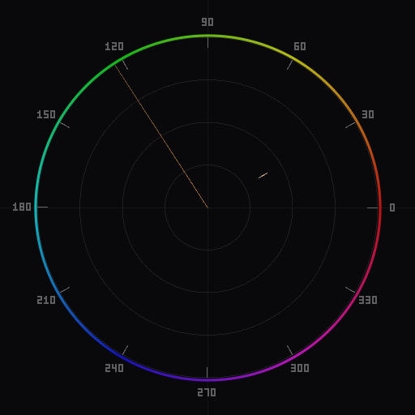
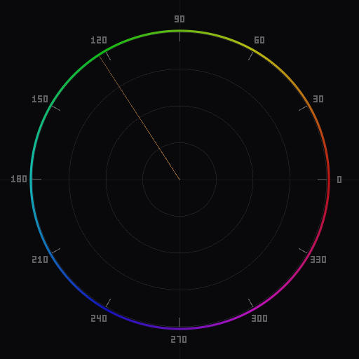

White Balance and the Vectorscope: Getting Neutral Right
A vectorscope reveals white balance errors that your eyes adapt to and ignore. Here is how to read those errors and correct them precisely.

A properly white-balanced scene. The chrominance cluster sits centered, with colors spreading outward evenly.
What neutral looks like on a vectorscope
A vectorscope plots the chrominance (color information) of every pixel in your image. The center of the scope represents zero chrominance -- a perfectly neutral gray with no color bias. The further a pixel sits from the center, the more saturated its color.
In a properly white-balanced image, the centroid of the chrominance distribution -- the average position of all plotted points, weighted by density -- sits at or very near the center of the scope. Individual colors spread outward from center in various directions (red objects pull toward the red region, blue sky pulls toward blue), but the overall mass is centered.
An image that contains mostly neutral tones -- an overcast street scene, an interior with white walls, a product shot on gray seamless -- will show a tight cluster around the center. The tighter and more centered that cluster is, the more neutral the white balance.
A colorful image still has a centered centroid when white balance is correct, but the distribution is wider. The key indicator is the center of mass, not the extent of the spread. If you mentally average where all the dots are, that average should land in the middle.
If you are not yet comfortable reading a vectorscope, our guide to reading a vectorscope covers the fundamentals of hue angle, saturation distance, and chrominance density.
How color casts appear

A warm color cast shifts the entire distribution toward the orange/red region. The centroid has moved clearly off-center.
A color cast displaces the entire chrominance distribution in one direction. This is the defining visual signature of a white balance error on a vectorscope, and it is unmistakable once you know what to look for.
Warm cast (color temperature too low). When the camera's white balance is set cooler than the actual light -- for example, shooting under tungsten light with a daylight preset -- the entire image takes on an orange-amber tone. On the vectorscope, the distribution shifts toward the orange/red region. Every cluster moves in that direction: what should be neutral grays now sit in the warm zone, skin tones push further out along the warm axis, and even cool-toned objects like blue fabric show a warm bias.
Cool cast (color temperature too high). The opposite case: white balance set warmer than the light. Shot under daylight with a tungsten preset, the image turns blue. The vectorscope distribution shifts toward the blue/cyan region. Neutrals sit in the cool zone instead of at center.
Green cast (tint shifted toward green). Fluorescent and some LED lights produce a green spike that the Tint slider corrects. On the vectorscope, the distribution shifts toward the green/yellow-green region. This is common under office lighting and in venues with older fluorescent fixtures.
Magenta cast (tint shifted toward magenta). Over-correcting for green, or shooting under certain LED panels, produces a magenta bias. The distribution shifts toward the magenta/pink region. Skin turns ruddy and unnatural.
The distance of the shift tells you the severity. A small offset -- a few percentage points from center -- is a mild cast that might be invisible on an uncalibrated monitor but will be apparent in print. A large offset is an obvious problem that even untrained eyes will notice.
Common white balance problems
Some white balance issues are harder to diagnose than a straightforward color cast. The vectorscope helps with these as well.
Mixed lighting. A scene lit by both tungsten and daylight -- a room with window light on one side and incandescent lamps on the other -- cannot be corrected with a single white balance setting. On the vectorscope, you will see the distribution stretched or split: part of the image pulls toward warm, part toward cool. The centroid may be near center (the two casts partially cancel), but the spread is unusually wide in one axis. This requires local correction (graduated filters, masks, or separate adjustments for different zones) rather than a global white balance change.
Auto white balance drift across a series. Camera auto white balance recalculates per frame. In a sequence shot under consistent lighting, AWB may produce slightly different results for each image, creating inconsistency. The vectorscope makes this visible: batch-compare images and look for the centroid shifting position between frames. Picking one manual white balance setting and applying it to the entire series eliminates the drift.
Color contamination from large colored surfaces. A subject standing on green grass or near a red brick wall picks up reflected color that looks like a white balance error but is not. The difference on the vectorscope: a true white balance error shifts everything uniformly, while color contamination affects only part of the distribution. You will see the main cluster centered but with a secondary cluster or tail extending toward the contaminating color. This requires local correction rather than global white balance adjustment.
Monitor calibration masking errors. If your monitor has a color bias, you may unknowingly introduce a white balance error while editing because the display is compensating in the wrong direction. The vectorscope operates on the actual pixel data and is immune to display errors. If the vectorscope shows a centered distribution but the image looks off to your eye, the problem is your monitor, not your white balance.
Fixing white balance with the vectorscope

After correction: the distribution is centered again. Compare the centroid position to the warm-cast image above.
The correction process is straightforward with a vectorscope providing real-time feedback.
Step 1: Identify the cast direction. Look at which direction the distribution has shifted from center. This tells you which axis to correct. A shift toward orange/amber means the Temperature slider needs to move cooler. A shift toward blue means it needs to move warmer. A shift toward green means the Tint slider needs to move toward magenta, and vice versa.
Step 2: Adjust Temperature. Move the Temperature slider while watching the vectorscope. The entire distribution will slide along the warm-cool axis. Stop when the centroid sits at center on that axis. Do not overcorrect -- passing through center into the opposite cast is a common mistake when correcting by eye alone, but the vectorscope makes it obvious.
Step 3: Adjust Tint. Move the Tint slider while watching the vectorscope. The distribution slides along the green-magenta axis. Center it. Temperature and Tint are largely independent axes on the vectorscope, so adjusting one should not undo the other.
Step 4: Verify. After both adjustments, the centroid should be at center. Individual colors should extend outward from center in directions that make sense for the scene content -- blue sky toward blue, green foliage toward green, skin tones toward the skin tone reference angle. If one element is still off while the rest looks correct, you have a local color problem, not a white balance problem.
This process works identically in Lightroom Classic and Photoshop. In Lightroom, the Temperature and Tint sliders are in the Basic panel. In Photoshop, they are in Camera Raw Filter or in a Color Balance adjustment layer (which maps roughly to the same warm/cool and green/magenta axes). With Chromascope open alongside your editor, you get immediate vectorscope feedback on every slider movement.
When perfect neutral isn't the goal
Not every image should be white-balanced to dead neutral. The vectorscope is a measurement tool, not a rule book. Its value is showing you exactly where you are so you can decide where you want to be.
Golden hour and sunset. The entire point of shooting at golden hour is the warm light. Correcting the white balance to neutral would destroy the mood. Instead, use the vectorscope to understand how warm the image is and make a deliberate choice about how much warmth to retain. A slight shift toward orange from center is natural for golden hour. A large shift may be more than the scene actually contained, suggesting you should pull back slightly.
Creative color grading. Color grading deliberately introduces non-neutral tones for mood and style. The vectorscope helps you grade precisely rather than blindly. Start with a neutral white balance, verify skin tones, then introduce your grade. The vectorscope shows you exactly how far each color has moved, letting you apply consistent grades across an entire series. See the portrait color grading guide for a complete workflow.
Preserving ambient character. A candlelit dinner, neon signs at night, the blue cast of twilight -- these are color environments that define the scene. The correct approach is often to white balance partway: remove enough cast to avoid an uncomfortable color shift, but retain enough to preserve the character of the light. The vectorscope lets you find that balance point precisely. Move the centroid partway toward center and stop when the ambient feeling is right.
The consistent principle is: know where neutral is first. The vectorscope shows you. Then decide how far from neutral you want to go, and in which direction. Whether you end up at perfect center or deliberately offset, the decision is informed rather than accidental.
Download Chromascope to see white balance errors in real time as you edit. The vectorscope updates live with every slider adjustment, making it easy to find neutral and then move away from it with intention.